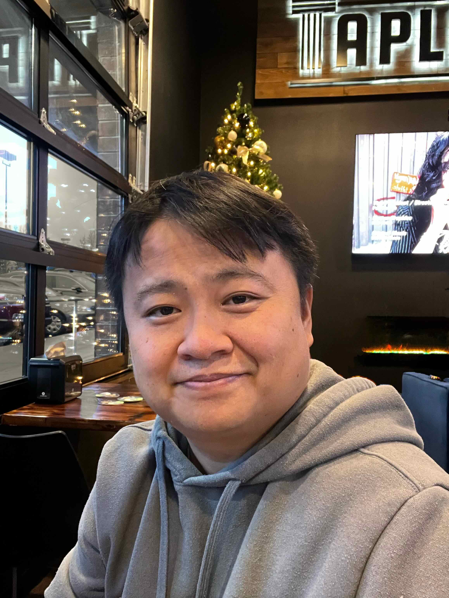
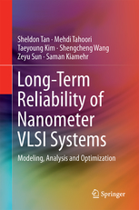

Dr. Taeyoung Kim (김태영;金泰永)

Biographical Sketch
Dr. Kim is currently a staff AI software architect at Intel
Corporation, Santa Clara, CA USA, where he drives pathfinding R&D of
on-device AI software platform to develop AI-based system-level
modeling and optimization. Until 2021, he worked channel analysis
tools for signal integrity and power integrity solutions for VLSI
high-speed I/O interconnect. He has authored or co-authored more than
thirty papers in scientific papers and one book publication about
machine learning-based dynamic resource management in 2019. Since
2020, he has worked as a standard committee of IEEE P1924.1, which
recently officially standardized in IEEE. He has been an associate
editor of Integration, the VLSI Journal, and a TPC of major VLSI
conferences since 2017 for DAC/ISLPED/ASP-DAC.
He has received the M.S. degree in electrical
engineering from University of
Virginia, Charlottesville, VA, USA in 2012, and the
Ph.D. degree in computer science
from University of California,
Riverside, CA, USA in 2017. His dissertation was titled
"System-level
Electromigration-Induced Dynamic Reliability
Management." During his Ph.D. study, he received a
best research award at ACM Ph.D. Forum at Design Automation
Conference (DAC) in 2015 and a dissertation award from the
University of California in 2017.
Selected Publications
Books
-
Order at Amazon
S. Tan, M. Tahoori, T. Kim, S. Wang, Z. Sun, and
S. Kiamehr, "Long-Term Reliability of Nanometer VLSI
Systems: Modeling, Analysis and Optimization," 1st
ed. Springer International Publishing, 2019
This book provides readers with a detailed reference
regarding two of the most important long-term reliability
and aging effects on nanometer integrated systems,
electromigrations (EM) for interconnect and biased
temperature instability (BTI) for CMOS devices. Dr. Kim has
been focusing on machine learning-based dynamic resource
management algorithm and this book includes his full doctoral research.
Journals/Conferences
- T. Kim, S. X.-D. Tan, C. Cook, and Z. Sun, “Detection of
counterfeited ICs via on-chip sensor and post-fabrication
authentication policy,” Integration, the VLSI Journal, vol. 63,
pp. 31–40, Sep. 2018.
- T. Kim, Z. Liu, and S. X.-D. Tan, “Dynamic reliability
management based on resource-based EM modeling for multi-core
microprocessors,” Microelectronics Journal, vol. 74,
pp. 106-115, Apr. 2018.
- T. Kim, Z. Sun, H. Chen, H. Wang, S. X-D. Tan, “Energy and
Lifetime Optimizations for Dark Silicon Manycore Microprocessor
Considering both Hard and Soft Errors,” in IEEE Transactions on
Very Large Scale Integration Systems (TVLSI), vol. 25, no. 9,
pp. 2561-2574, Sept. 2017
- T. Kim, Z. Sun, C. Cook, J. Gaddipati, H. Wang, H. Chen,
S. X.-D. Tan, “Dynamic Reliability Management for Near-Threshold
Dark Silicon Processors”, Proc. IEEE/ACM International
Conference on Computer-Aided Design (ICCAD), Austin, TX,
Nov. 2016
- T. Kim, Z. Sun, C. Cook, H. Zhao, R. Li, D.Wong,
S. X.-D. Tan, “Cross-layer modeling and optimization for
electromigration-induced reliability”, Proc. IEEE/ACM Design
Automation Conference (DAC), Austin, TX, Jun. 2016
- T. Kim, X. Huang, H. Chen, V. Sukharev, S. X.-D. Tan,
“Learning-based Dynamic Reliability Management for Dark Silicon
Processor Considering EM Effects”, Proc. Design, Automation and
Test in Europe (DATE), Dresden, Germany, Mar. 2016
Theses
- T. Kim, “System-Level Electromigration-Induced Dynamic
Reliability Management,”, Doctoral Dissertation, University of California, 2017
- T. Kim, “Detection and Prevention of Forward Head
Posture with Body Sensor Networks,” Master's Thesis, University of Virginia,
2012
Complete list
Professional Activities
- [2017-Present] Associate Editor, Integration, the VLSI Journal, ELSEVIER
- [2023] System Track, Technical Program Committee (TPC), ACM/IEEE International Symposium on Low Power
Electronics and Design (ISLPED)
- [2023] AI Track, Technical Program Committee (TPC), Design Automation Conference (DAC)
- [2022] AI Track, Technical Program Committee (TPC), Design Automation Conference (DAC)
- [2022] System Track, Technical Program Committee (TPC), ACM/IEEE International Symposium on Low Power
Electronics and Design (ISLPED)
- [2022] Special Session Chair, Asian and South Pacific Design Automation Conference (ASP-DAC)
- [2021] System Track, Technical Program Committee (TPC), ACM/IEEE International Symposium on Low Power
Electronics and Design (ISLPED)
- [2021-Present] Program Committee, Young Excellence (WYE) Program at IEEE Solid-State Circuits
Society, IEEE
- [2020-2022] Standard Committee, IEEE P1924.1 Standard Working Group, Energy Efficient Comm
Hardware, IEEE
- [2017-2018] Program Committee, ACM Student Research Competition at International Conference On
Computer Aided Design (ICCAD)
- [2019-Present] Reviewer, IEEE Transactions on Computer-Aided Design of Integrated Circuits and
Systems (TCAD)
- [2018-Present] Reviewer, Microelectronics Journal, ELSEVIER
- [2018-Present] Reviewer, Microelectronics Reliability Journal, ELSEVIER
- [2018-Present] Reviewer, ACM Journal on Emerging Technologies in Computing Systems (JETC)
- [2017-Present] Reviewer, ACM Transactions on Embedded Computing Systems (TECS)
- [2016-Present] Reviewer, ACM Transactions on Design Automation of Electronic Systems (TODAES)
- [2015-Present] Reviewer, IEEE Transactions On Very Large Scale Integration (VLSI) Systems (TVLSI)
Awards
- Finalist at ACM Student Research Competition (SRC), International Conference on Computer-Aided Design (ICCAD), 2016
- Travel Grant Award at ACM Student Research Competition (SRC), International Conference on Computer-Aided Design (ICCAD), 2016
- Travel Grant Award at Young Faculty Workshop, Design Automation Conference (DAC), 2016
- Dissertation Award, DYP Fellowship Award, University of California, Riverside, 2016
- Travel Grant Award at ACM Student Research Competition (SRC), International Conference on Computer-Aided Design (ICCAD), 2015
- Best Research Award at ACM Ph.D. Forum, Design Automation Conference (DAC), 2015
- Travel Grant Award at ACM Ph.D. Forum, Design Automation Conference (DAC), 2015
- Travel Grant Award at ACM Student Research Competition (SRC), International Conference on Computer-Aided Design (ICCAD), 2014
- Richard Newton Fellowship Award, Design Automation Conference (DAC), 2014
- Dean’s Distinguished Fellowship Award, University of California, Riverside, 2013-2015
- In Recognition of Exceptional Presentation (2nd place), KSEA Virginia Regional Conference, 2013
Contact
- Email: kim \{at} taeyoung \{dot} org
- Phone: \{us country code} \{dash} 650 \{dash} 600 \{dash} 1661
- See Linkedin
Last updated on Apr 12, 2021 2:50 PM